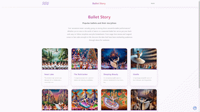

Other Websites
As well as having created the websites outlined in my volunteering work section, I have created other websites over time, here are ones that I currently have online.
Christmas Countdown
I created this website after thinking it would be a fun thing to do as we were approaching Christmas 2024. It started off simply with a different image for each day starting 25 days before. By the end it also had Christmas quotations. Now it has a placeholder image and messages that change during the year through to December 2025. The domain expires in December but I'll probably renew it to keep it alive.
https://myadventcalendar.me/Ballet Story Online
I went to the ballet with a friend for the first time recently and really enjoyed it. At the time I was trying to think of another website to create, so I thought I'd make one on ballet storylines. Unlike the other websites, this one was generated completely by AI (Anthropic's Claude). All the design, layout, storylines, all the images, everything is AI. Well, everything except the little wavy logo image, I made that myself. Quite impressive what AI can do, I wonder what sites' designs it was copying when it spat this code out at me.
https://balletstory.online/